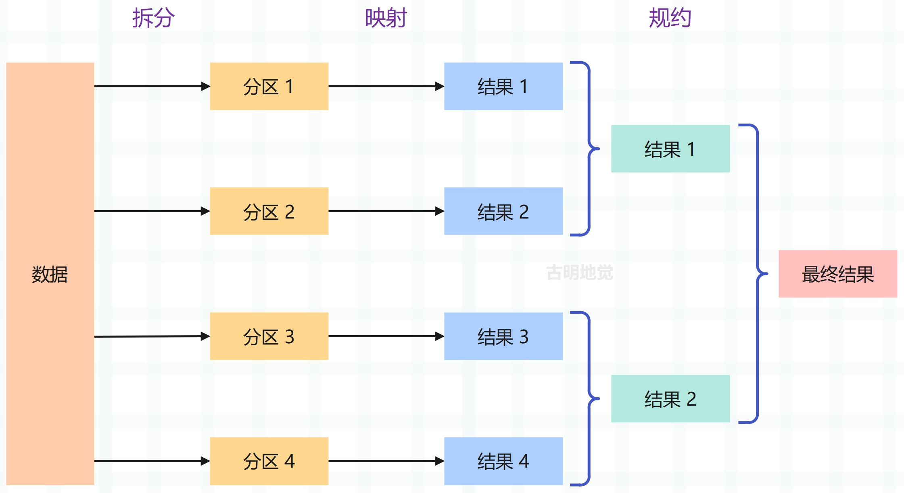

楔子
到目前为止我们使用 asyncio 获得的性能提升，一直专注在并发运行 IO 密集型任务上面，当然运行 IO 密集型任务是 asyncio 的主要工作，并且按照目前编写代码的方式，需要注意尽量不要在协程中运行 CPU 密集型代码。但这似乎严重限制了 asyncio 的使用，因为这个库能做的事情不仅仅限于处理 IO 密集型任务。
asyncio 有一个用于和 multiprocessing 库进行互操作的 API，通过这个 API，即便执行 CPU 密集型代码，也可以获得 asyncio 库带来的优势。这使我们能够为 CPU 密集型工作（如数学计算或数据处理）实现性能提升，避开全局解释器锁，充分利用多核机器资源。
标准库 multiprocessing
CPython 有一个全局解释器锁（GIL），GIL 可防止多个字节码并行运行。这意味着 IO 密集型任务以外的其它任务，除了一些小的异常，使用多线程不会像在 Java 和 C++ 等语言中那样提供任何性能优势。因此对于 CPU 密集型工作，可以通过 multiprocessing 库生成子进程来实现性能提升。
每个子进程都有自己的 Python 解释器，且遵循 GIL，所以会有多个解释器，每个解释器都有自己的 GIL。假设运行在具有多个 CPU 核的机器上，这意味着可以有效地并行处理任何 CPU 密集型的工作负载。即使进程比内核数要多，操作系统也会使用抢占式多任务，来允许多个任务同时运行。这种设置既是并发的，也是并行的。
import time
from multiprocessing import Process
def count(to: int):
start = time.perf_counter()
counter = 0
while counter < to:
counter += 1
end = time.perf_counter()
if __name__ == '__main__':
start = time.perf_counter()
task1 = Process(target=count, args=(100000000,))
task2 = Process(target=count, args=(100000000,))
# 启动进程
task1.start()
task2.start()
# 该方法会一直阻塞主进程，直到子进程执行完成，并且 join 方法内部也可以接收一个超时时间
# 如果子进程在规定时间内没有完成，那么主进程不再等待
task1.join()
task2.join()
end = time.perf_counter()
print(f"在 {end - start} 秒内完成")
"""
在 1.813750300000038 秒内完成
"""
我们看到总耗时是 1.8 秒，如果把子进程换成子线程，那么耗时就不一样了，我们来测试一下。
import time
from threading import Thread
def count(to: int):
start = time.perf_counter()
counter = 0
while counter < to:
counter += 1
end = time.perf_counter()
if __name__ == '__main__':
start = time.perf_counter()
# 多线程和多进程相关的 API 是一致的，只需要将 Process 换成 Thread 即可
task1 = Thread(target=count, args=(100000000,))
task2 = Thread(target=count, args=(100000000,))
task1.start()
task2.start()
task1.join()
task2.join()
end = time.perf_counter()
print(f"在 {end - start} 秒内完成")
"""
在 3.3010417999998936 秒内完成
"""
因为线程存在切换，所以不会运行完一个任务之后再运行下一个，而是并发运行的。但不管怎么并发，同一时刻只会有一个任务在运行。所以对于 CPU 密集型任务来说，上面的耗时是两个任务加起来的时间，因为同一时刻只会用到一个 CPU 核心。而采用多进程，那么两个任务就是并行运行的了。
虽然启动多进程带来了不错的性能提升，但是有一点却很尴尬，因为必须为启动的每个进程调用 start 和 join。并且我们也不知道哪个进程会先完成，如果想实现 asyncio.as_completed 之类的效果，并在结果完成时处理它们，那么上面的解决方案就无法满足要求了。此外 join 方法不会返回目标函数的返回值，事实上，目前在不使用共享进程内存的情况下是无法获取函数的返回值的。
因此这个 API 适用于简单的情况，但如果我们想要获取函数的返回值，或想要在结果生成时立即处理，它显然不起作用。幸运的是，进程池提供了一种解决方法。
在使用多进程时，必须要加上 if __name__ == '__main__'，否则会报错：An attempt has been made to start a new process before the current process has finished its bootstrapping phase。这样做的原因是为了防止其他人导入代码时不小心启动多个进程。
from multiprocessing import Pool
def say_hello(name) -> str:
return f"hello, {name}"
if __name__ == '__main__':
with Pool() as pool:
hi1 = pool.apply(say_hello, args=("satori",))
hi2 = pool.apply(say_hello, args=("koishi",))
print(hi1)
print(hi2)
"""
hello, satori
hello, koishi
"""
我们使用 with Pool() as pool 创建了一个进程池，这是一个上下文管理器，因为一旦使用了进程池，那么就需要在适当的时候关闭创建的 Python 进程。如果不这样做，会存在进程泄露的风险，这可能导致资源利用的问题。当实例化这个池时，它会自动创建与你使用的机器上的 CPU 内核数量相等的 Python 进程。
可通过运行 multiprocessing.cpu_count() 函数来确定当前机器拥有的 CPU 核心数，并且在调用 Pool() 时也可以通过指定 processes 参数设置需要使用的核心数。一般情况下，使用默认值即可。
接下来调用进程池的 apply 方法在一个单独的进程中运行 say_hello 函数，这个方法看起来类似于之前对 Process 类所做的，我们传递了一个目标函数和一个参数元组。但区别是不需要自己启动进程或调用 join，并且还得到了函数的返回值，这在前面的例子中是无法完成的。
上面的代码可以成功执行，但有一个问题，apply 方法会一直阻塞，直到函数执行完成。这意味着，如果每次调用 say_hello 需要 10 秒，那么整个程序的运行时间将是大约 20秒，因为是串行运行的，无法并行运行。因此可以将 apply 换成 apply_async 来解决这个问题，一旦调用的是 apply_async 方法，那么返回的就不再是目标函数的返回值了，而是一个 AsyncResult 对象，进程会在后台运行。
如果想要返回值，那么可以调用 AsyncResult 的 get 方法，该方法会阻塞并获取目标函数的返回值。
from multiprocessing import Pool
def say_hello(name) -> str:
return f"hello, {name}"
if __name__ == '__main__':
with Pool() as pool:
hi1_async = pool.apply_async(say_hello, args=("satori",))
hi2_async = pool.apply_async(say_hello, args=("koishi",))
# 可以接收一个超时时间，如果在规定时间内没有完成
# 那么抛出 multiprocessing.context.TimeoutError，默认会一直阻塞
print(hi1_async.get())
print(hi2_async.get())
"""
hello, satori
hello, koishi
"""
调用 apply_async 时，对 say_hello 的两个调用会立即在不同的进程中开始执行。然后调用 get 方法时，父进程会阻塞，直到子进程运行完毕、将值返回。但这里还隐藏了一个问题，如果 hi1_async 需要 10 秒，hi2_async 需要 1 秒，会发生什么呢？因为先调用 hi1_async 的 get 方法，所以在第二个 print 打印之前需要先阻塞 10 秒，即使 hi2_async 只需要 1 秒就完成了。
如果想在事情完成后立即作出回应，就会遇到问题，这种情况下，我们真正想要的是类似于 asyncio.as_completed 返回的对象。接下来看看如何将进程池执行器与 asyncio 一起使用，以便我们解决这个问题。但在此之前，需要先了解一个模块。
concurrent.futures 的相关用法
本来这个模块不应该放在这里介绍的，但如果它不说，后面的内容就不方便展开，所以我们就来先聊聊这个模块。
concurrent.futures 模块提供了使用线程池或进程池运行任务的接口，线程池和进程池的 API 是一致的，所以应用只需要做最小的修改就可以在线程和进程之间进行切换。这个模块提供了两种类型的类与这些池交互：执行器（executor）用来管理工作线程池或进程池，future 用来管理计算的结果。要使用工作线程池或进程池，应用要创建适当的执行器，然后向它提交任务。
该模块和 asyncio 里面的一些概念非常相似，或者说 asyncio 在设计的时候借鉴了 concurrent.futures 的很多理念。
Future 对象
当我们将一个函数提交到线程池里面运行时，会立即返回一个对象，这个对象就叫做 Future 对象，里面包含了函数的执行状态等等，当然我们也可以手动创建一个 Future 对象。
concurrent.futures 里的 Future 和 asyncio 里的 Future 在概念上是类似的。
from concurrent.futures import Future
# 创建一个 Future 对象
future = Future()
def callback(future):
print(f"当 set_result 的时候，执行回调，返回值：{future.result()}")
# 通过调用 add_done_callback 方法，可以将 future 绑定一个回调函数
# 这里只需要传入函数名即可，future 会自动传递给 callback 的第一个参数
# 如果需要多个参数的话，怎么办呢？很简单，使用偏函数即可
future.add_done_callback(callback)
# 什么时候会触发回调函数的执行呢？当 future 执行 set_result 的时候
future.set_result("some value")
"""
当 set_result 的时候，执行回调，返回值：some value
"""
我们说过，将函数提交到线程池里面运行的时候，会立即返回，并得到一个 Future 对象。这个 Future 对象里面就包含了函数的执行状态，比如此时是处于暂停、运行中、还是完成等等，并且在函数执行完毕之后，还可以拿到返回值。
from concurrent.futures import ThreadPoolExecutor
import time
def task(name, age, n):
time.sleep(n)
return f"name is {name}，age is {age}，sleep {n}s"
# 创建一个线程池，里面还可以指定 max_workers 参数，表示最多创建多少个线程
# 如果不指定，那么会为每一个任务创建一个线程
executor = ThreadPoolExecutor()
# 通过 submit 就直接将任务提交到线程池里面了，一旦提交，就会立刻运行
# 提交之后，相当于开启了一个新的线程，主线程会继续往下走
future = executor.submit(task, "古明地觉", 16, 3)
# 由于 n = 3，所以会休眠 3 秒，此时任务处于 running 状态
print(future) # <Future at 0x226b860 state=running>
# 让主程序也休眠 3s
time.sleep(3)
# 此时再打印
print(future) # <Future at 0x226b860 state=finished returned str>
可以看到，一开始任务处于 running（正在运行）状态，3 秒过后，任务处于 finished（完成）状态，并告诉我们返回了一个 str 对象。
然后获取任务的返回值：
from concurrent.futures import ThreadPoolExecutor
import time
def task(name, age, n):
time.sleep(n)
return f"name is {name}，age is {age}，sleep {n}s"
executor = ThreadPoolExecutor()
future = executor.submit(task, "古明地觉", 16, 3)
start_time = time.perf_counter()
print(future.result()) # name is 古明地觉，age is 16，sleep 3s
print(f"耗时：{time.perf_counter() - start_time}") # 耗时：2.999359371
可以看到，打印 future.result() 这一步花了将近 3s。其实也不难理解，future.result() 是干嘛的，就是为了获取函数的返回值，可函数都还没有执行完毕，它又从哪里获取呢？所以只能先等待函数执行完毕，将返回值通过 set_result 设置到 future 里面之后，外界的 future.result() 才能够获取到值。所以 future.result() 这一步实际上是会阻塞的，会等待任务执行完毕。
当然也可以绑定一个回调：
from concurrent.futures import ThreadPoolExecutor
import time
def task(name, age, n):
time.sleep(n)
return f"name is {name}，age is {age}，sleep {n}s"
def callback(future):
print(future.result())
executor = ThreadPoolExecutor()
future = executor.submit(task, "古明地觉", 16, 3)
time.sleep(5)
future.add_done_callback(callback)
"""
name is 古明地觉，age is 16，sleep 3s
"""
等到函数执行完毕之后，依旧会获取到返回值，但这里加上了 time.sleep(5)，只是为了证明即使等函数完成之后再去添加回调，依旧是可以的。函数完成之前添加回调，那么会在函数执行完毕后触发回调；函数完成之后添加回调，由于函数已经执行完成，代表此时的 future 已经有值了，或者说已经 set_result 了，那么会立即触发回调，因此 time.sleep(5) 完全可以去掉。
提交多个函数
提交函数的话，可以提交任意多个，我们来看一下：
from concurrent.futures import ThreadPoolExecutor
import time
def task(name, age, n):
time.sleep(n)
return f"name is {name}，age is {age}，sleep {n}s"
executor = ThreadPoolExecutor()
futures = [executor.submit(task, "古明地觉", 16, 3),
executor.submit(task, "古明地觉", 16, 4),
executor.submit(task, "古明地觉", 16, 1),
]
# 此时都处于 running
print(futures)
"""
[<Future at 0x226b860 state=running>,
<Future at 0x9f4b160 state=running>,
<Future at 0x9f510f0 state=running>]
"""
time.sleep(3.5)
# 主程序 sleep 3.5s 后，futures[0] 和 futures[2] 处于 finished，futures[1] 处于running
print(futures)
"""
[<Future at 0x271642c2e50 state=finished returned str>,
<Future at 0x2717b5f6e50 state=running>,
<Future at 0x2717b62f1f0 state=finished returned str>]
"""
获取任务的返回值：
from concurrent.futures import ThreadPoolExecutor
import time
def task(name, age, n):
time.sleep(n)
return f"name is {name}，age is {age}，sleep {n}s"
executor = ThreadPoolExecutor()
futures = [executor.submit(task, "古明地觉", 16, 5),
executor.submit(task, "古明地觉", 16, 2),
executor.submit(task, "古明地觉", 16, 4),
executor.submit(task, "古明地觉", 16, 3),
executor.submit(task, "古明地觉", 16, 6),
]
# 此时的 futures 里面相当于有了 5 个 future
# 我们记做 future1，future2，future3，future4，future5
for future in futures:
print(future.result())
"""
name is 古明地觉，age is 16，sleep 5s
name is 古明地觉，age is 16，sleep 2s
name is 古明地觉，age is 16，sleep 4s
name is 古明地觉，age is 16，sleep 3s
name is 古明地觉，age is 16，sleep 6s
"""
当使用 for 循环的时候，实际上会依次遍历这 5 个 future，所以返回值的顺序就是我们添加的 future 的顺序。但 future1 对应的任务休眠了 5s，那么必须等到 5s 后，future1 里面才会有值。由于这五个任务是并发执行的，future2、future3、future4 只休眠了 2s、4s、3s，所以肯定会先执行完毕，然后执行 set_result，将返回值设置到对应的 future 里。
但 Python 的 for 循环不可能在第一次迭代还没有结束，就去执行第二次迭代，因为 futures 里面的几个 future 的顺序一开始就被定好了，只有当第一个 future.result() 执行完成之后，才会执行下一个 future.result()。即便后面的任务已经执行完毕，但由于 for 循环的顺序，也只能等着，直到前面的 future.result() 执行完毕。
所以会先打印 name is 古明地觉，age is 16，sleep 5s"，当这句打印完时，由于后面的任务早已执行完毕，只是第一个 future.result() 太慢，又把路给堵住了，才导致后面的无法输出。因此第一个 future.result() 执行完毕之后，后面的 3 个 future.result() 会瞬间执行，从而立刻打印。
而最后一个任务由于是 6s，因此再过 1s 后，打印 "name is 古明地觉，age is 16，sleep 6s"。
查看函数是否执行完毕
我们之前说 future 里面包含了函数的执行状态，所以可以通过 future.done() 查看任务是否完成。
from concurrent.futures import ThreadPoolExecutor
import time
def task(name, age, n):
time.sleep(n)
return f"name is {name}，age is {age}，sleep {n}s"
executor = ThreadPoolExecutor()
# 之前说过，可以打印 future 来查看任务的状态，其实还有一种方法来确定任务是否完成
future = executor.submit(task, "椎名真白", 16, 3)
while True:
if future.done():
print(f"任务执行完毕：{future.done()}")
break
else:
print(f"任务尚未执行完毕：{future.done()}")
time.sleep(1)
"""
任务尚未执行完毕：False
任务尚未执行完毕：False
任务尚未执行完毕：False
任务尚未执行完毕：False
任务执行完毕：True
"""
# 当任务尚未执行完毕的时候，future.done() 是 False，执行完毕之后是 True
除此之外，还有一个 future.running() ，表示任务是否正在运行。如果正在运行返回 True，运行结束或者失败，返回 False。
使用 map 来提交多个函数
使用 map 来提交会更简单一些，如果任务的量比较多，并且不关心为某个具体任务设置回调的话，可以使用 map。
# 如果我想将以下这种用 submit 提交的方式，改用 map 要怎么做呢？
"""
futures = [executor.submit(task, "椎名真白", 16, 5),
executor.submit(task, "古明地觉", 16, 2),
executor.submit(task, "古明地恋", 15, 4),
executor.submit(task, "坂上智代", 19, 3),
executor.submit(task, "春日野穹", 16, 6)]
"""
# 可以直接改成
"""
results = executor.map(task,
["椎名真白", "古明地觉", "古明地恋", "坂上智代", "春日野穹"],
[16, 16, 15, 19, 16],
[5, 2, 4, 3, 6])
"""
map 这样写确实是简化了不少，但是使用这种方式就无法为某个具体的任务添加回调函数了。并且 map 内部也是使用了 submit，我们测试一下：
from concurrent.futures import ThreadPoolExecutor
import time
def task(name, age, n):
time.sleep(n)
return f"name is {name}，age is {age}，sleep {n}s"
executor = ThreadPoolExecutor()
results = executor.map(task,
["椎名真白", "古明地觉", "古明地恋", "坂上智代", "春日野穹"],
[16, 16, 15, 19, 16],
[5, 2, 4, 3, 6])
# 此时返回的是一个生成器，里面存放的就是函数的返回值
print(results)
"""
<generator object Executor.map.<locals>.result_iterator at 0x0000000009F4C840>
"""
for result in results:
print(result)
"""
name is 椎名真白，age is 16，sleep 5s
name is 古明地觉，age is 16，sleep 2s
name is 古明地恋，age is 15，sleep 4s
name is 坂上智代，age is 19，sleep 3s
name is 春日野穹，age is 16，sleep 6s
"""
如果想等所有任务都执行完毕之后再一并处理的话，可以直接调用 list。
from concurrent.futures import ThreadPoolExecutor
import time
import pprint
def task(name, age, n):
time.sleep(n)
return f"name is {name}，age is {age}，sleep {n}s"
executor = ThreadPoolExecutor()
results = executor.map(task,
["椎名真白", "古明地觉", "古明地恋", "坂上智代", "春日野穹"],
[16, 16, 15, 19, 16],
[5, 2, 4, 3, 6])
# 由于 results 是一个生成器，当转化为 list 之后，会将里面所有的值全部生产出来
# 这就意味着，要将所有任务的返回值都获取到才行
# 尽管我们不需要手动调用 result()，但这一步是无法避免的，只是 map 内部自动帮我们调用了
# 因此调用 result() 方法是不可避免的，调用的时候依旧会阻塞
# 而耗时最长的任务是 6s，因此这一步会阻塞 6s，等 6s 过后会打印所有任务的返回值
start_time = time.perf_counter()
pprint.pprint(list(results))
print(f"总耗时：{time.perf_counter() - start_time}")
"""
['name is 椎名真白，age is 16，sleep 5s',
'name is 古明地觉，age is 16，sleep 2s',
'name is 古明地恋，age is 15，sleep 4s',
'name is 坂上智代，age is 19，sleep 3s',
'name is 春日野穹，age is 16，sleep 6s']
总耗时：6.00001767
"""
当然调用 list 和直接使用 for 循环本质是一样的，并且我们看到，这个和 asyncio 的 gather 是比较类似的。
按照顺序等待
现在有这么一个需求，就是哪个任务先完成，哪个就先返回，这要怎么做呢？
from concurrent.futures import ThreadPoolExecutor, as_completed
import time
def task(name, age, n):
time.sleep(n)
return f"name is {name}，age is {age}，sleep {n}s"
executor = ThreadPoolExecutor()
futures = [executor.submit(task, "椎名真白", 16, 5),
executor.submit(task, "古明地觉", 16, 2),
executor.submit(task, "古明地恋", 15, 4),
executor.submit(task, "坂上智代", 19, 3),
executor.submit(task, "春日野穹", 16, 6)]
for future in as_completed(futures):
print(future.result())
"""
name is 古明地觉，age is 16，sleep 2s
name is 坂上智代，age is 19，sleep 3s
name is 古明地恋，age is 15，sleep 4s
name is 椎名真白，age is 16，sleep 5s
name is 春日野穹，age is 16，sleep 6s
"""
只需要将 futures 传递给 as_completed 即可。
如何取消一个任务
我们可以将任务添加到线程池当中，但如果想取消怎么办呢？
from concurrent.futures import ThreadPoolExecutor
import time
def task(name, age, n):
time.sleep(n)
return f"name is {name}，age is {age}，sleep {n}s"
executor = ThreadPoolExecutor()
future1 = executor.submit(task, "椎名真白", 16, 5)
future2 = executor.submit(task, "古明地觉", 16, 2)
future3 = executor.submit(task, "古明地恋", 15, 4)
# 取消任务，可以使用 future.cancel()
print(future3.cancel()) # False
但是调用 cancel 方法的时候，返回的是 False，这是为什么？很简单，因为任务已经提交到线程池里面了，任务已经运行了，只有在任务还没有运行时，取消才会成功。可这不矛盾了吗？任务一旦提交就会运行，只有不运行才会取消成功，这怎么办？还记得线程池的一个叫做 max_workers 的参数吗？用于控制线程池内的线程数量，我们可以将最大的任务数设置为 2，那么当第三个任务进去的时候，就不会执行了，而是处于等待状态。
from concurrent.futures import ThreadPoolExecutor
import time
def task(name, age, n):
time.sleep(n)
return f"name is {name}，age is {age}，sleep {n}s"
# 此时最多只能同时执行两个任务
executor = ThreadPoolExecutor(max_workers=2)
future1 = executor.submit(task, "椎名真白", 16, 5)
future2 = executor.submit(task, "古明地觉", 16, 2)
future3 = executor.submit(task, "古明地恋", 15, 4)
print(future3.cancel()) # True
"""
sleep 5
sleep 2
"""
# 可以看到结果为 True，说明取消成功了，而 sleep 4 也没有被打印
而事实上在启动线程池的时候，肯定是需要设置容量的，不然处理几千个任务就要开几千个线程吗。
任务中的异常
如果任务当中产生了一个异常，同样会被保存到 future 当中，可以通过 future.exception() 获取。
from concurrent.futures import ThreadPoolExecutor
def task1():
1 / 0
def task2():
pass
executor = ThreadPoolExecutor(max_workers=2)
future1 = executor.submit(task1)
future2 = executor.submit(task2)
print(future1.exception()) # division by zero
print(future2.exception()) # None
# 或者
try:
future1.result()
except Exception as e:
print(e) # division by zero
等待所有任务完成
一种方法是遍历所有的 future，调用它们的 result 方法。
from concurrent.futures import ThreadPoolExecutor
import time
def task(name, age, n):
time.sleep(n)
return f"name is {name}，age is {age}，sleep {n}s"
executor = ThreadPoolExecutor()
future1 = executor.submit(task, "椎名真白", 16, 5)
future2 = executor.submit(task, "古明地觉", 16, 2)
future3 = executor.submit(task, "古明地恋", 15, 4)
# 这里是不会阻塞的
print(123)
for future in [future1, future2, future3]:
print(future.result())
"""
123
name is 椎名真白，age is 16，sleep 5s
name is 古明地觉，age is 16，sleep 2s
name is 古明地恋，age is 15，sleep 4s
"""
或者使用 wait 方法：
from concurrent.futures import ThreadPoolExecutor, wait
import time
def task(name, age, n):
time.sleep(n)
return f"name is {name}，age is {age}，sleep {n}s"
executor = ThreadPoolExecutor()
future1 = executor.submit(task, "椎名真白", 16, 5)
future2 = executor.submit(task, "古明地觉", 16, 2)
future3 = executor.submit(task, "古明地恋", 15, 4)
# 这里是不会阻塞的
print(123)
"""
123
"""
# 直到所有的 future 完成，这里的 return_when 有三个可选值
# FIRST_COMPLETED，当任意一个任务完成或者取消
# FIRST_EXCEPTION，当任意一个任务出现异常，如果都没出现异常等同于 ALL_COMPLETED
# ALL_COMPLETED，所有任务都完成，默认是这个值
# 会卡在这一步，直到所有的任务都完成
fs = wait([future1, future2, future3], return_when="ALL_COMPLETED")
# 此时返回的 fs 是 DoneAndNotDoneFutures 类型的 namedtuple
# 里面有两个值，一个是 done，一个是 not_done
print(fs.done)
"""
{<Future at 0x1df1400 state=finished returned str>,
<Future at 0x2f08e48 state=finished returned str>,
<Future at 0x9f7bf60 state=finished returned str>}
"""
print(fs.not_done)
"""
set()
"""
for f in fs.done:
print(f.result())
"""
name is 椎名真白，age is 16，sleep 5s
name is 古明地恋，age is 15，sleep 4s
name is 古明地觉，age is 16，sleep 2s
"""
也可以使用上下文管理：
from concurrent.futures import ThreadPoolExecutor
import time
def task(name, age, n):
time.sleep(n)
return f"name is {name}，age is {age}，sleep {n}s"
with ThreadPoolExecutor() as executor:
future1 = executor.submit(task, "椎名真白", 16, 5)
future2 = executor.submit(task, "古明地觉", 16, 2)
future3 = executor.submit(task, "古明地恋", 15, 4)
print(future1.result())
print(future2.result())
print(future3.result())
# 直到 with 语句全部执行完毕，才会往下走
print(123)
"""
name is 椎名真白，age is 16，sleep 5s
name is 古明地觉，age is 16，sleep 2s
name is 古明地恋，age is 15，sleep 4s
123
"""
或者调用 executor 的 shutdown：
from concurrent.futures import ThreadPoolExecutor
import time
def task(name, age, n):
time.sleep(n)
return f"name is {name}，age is {age}，sleep {n}s"
executor = ThreadPoolExecutor()
future1 = executor.submit(task, "椎名真白", 16, 5)
future2 = executor.submit(task, "古明地觉", 16, 2)
future3 = executor.submit(task, "古明地恋", 15, 4)
executor.shutdown()
print(future1.result())
print(future2.result())
print(future3.result())
print(123)
"""
name is 椎名真白，age is 16，sleep 5s
name is 古明地觉，age is 16，sleep 2s
name is 古明地恋，age is 15，sleep 4s
123
"""
以上就是 concurrent.futures 的基本用法， 这里为了方便介绍，使用的是线程池执行器。如果想换成进程池，那么只需要将 ThreadPoolExecutor 换成 ProcessPoolExecutor。
from concurrent.futures import ThreadPoolExecutor
from concurrent.futures import ProcessPoolExecutor
并且在看这个模块的时候，会发现它里面的很多概念和 asyncio 基本是一致的，所以当发现概念上和 asyncio 有重叠时，不用担心，在 asyncio 里面学到的知识放在 concurrent.futures 里面也是适用的。
进程池执行器与 asyncio
我们已经了解了如何使用进程池同时运行 CPU 密集型操作，这些池适用于简单的用例，但 Python 在 concurrent.futures 模块中提供了进程池的一个抽象。该模块包含进程和线程的执行器，它们可以单独使用，也可与 asyncio 互操作。
因为 Python 的进程池 API 与进程强耦合，而 multiprocessing 是实现抢占式多任务的两种方法之一，另一种方法是多线程。如果我们需要轻松改变处理并发的方式，在进程和线程之间无缝切换怎么办？如果想要这样的设计，我们需要构建一个抽象，它包含将工作分配到资源池的核心内容，而不关心这些资源是进程、线程还是其它构造。
所以 concurrent.futures 模块通过 Executor 抽象类提供了这个抽象，该类定义了两种异步执行工作的方法：第一个是 submit，它接收一个可调用对象并返回一个 future，类似于 pool.apply_async 方法。第二个则是 map，该方法接收可调用对象和参数列表，并返回调用结果的迭代器，类似于 gather，因为结果一旦完成就可被使用。
Executor 有两个具体的实现：ProcessPoolExecutor 和 ThreadPoolExecutor，分别用于进程池和线程池。
而我们上面已经介绍了这个模块，虽然介绍的是线程池执行器，但进程池执行器和它的用法是一样的。那么下面就来学习一下，如何将其挂接到 asyncio 中。
from concurrent.futures import ProcessPoolExecutor
import time
def count(to: int) -> int:
start = time.perf_counter()
counter = 0
while counter < to:
counter += 1
end = time.perf_counter()
print(f"在 {end - start} 秒内将 counter 增加到 {to}")
return counter
if __name__ == '__main__':
with ProcessPoolExecutor() as executor:
numbers = [1, 3, 5, 22, 100000000]
for result in executor.map(count, numbers):
print(result)
"""
在 4.000003173132427e-07 秒内将 counter 增加到 1
在 2.999995558639057e-07 秒内将 counter 增加到 3
在 4.000003173132427e-07 秒内将 counter 增加到 5
在 6.000000212225132e-07 秒内将 counter 增加到 22
1
3
5
22
在 1.6254752999993798 秒内将 counter 增加到 100000000
100000000
"""
运行代码时，会看到对较小数字的调用将很快完成，并立即输出。然而当参数为 100000000 的调用则花费很长时间，并在几个较小的数字之后输出。
虽然看起来这与 asyncio.as_completed 的工作方式相同，但迭代顺序是根据在数字列表中传递的顺序确定的。这意味着如果 100000000 是传入的第一个数字，程序将等待该调用完成，然后才能输出之前完成的其它结果，因此无法像 asyncio.as_completed 那样可以迅速响应。
带有异步事件循环的进程池执行器
现在我们已经了解了进程池执行器如何工作的基础知识，接下来看看如何将它挂接到 asyncio 事件循环中。
事件循环有一个 run_in_executor 方法，该方法接收一个池（可以是线程池或进程池）和一个可调用对象，并将在池中运行该可调用对象。然后它返回一个 awaitable 对象，我们可在 await 语句中使用它，或将它传递给一个 API 函数，例如 gather。
from concurrent.futures import ProcessPoolExecutor
import asyncio
from asyncio.events import AbstractEventLoop
def count(to: int) -> int:
counter = 0
while counter < to:
counter += 1
return counter
async def main():
with ProcessPoolExecutor() as executor:
loop: AbstractEventLoop = asyncio.get_running_loop()
numbers = [1, 3, 5, 22, 100000000]
tasks = [loop.run_in_executor(executor, count, n) for n in numbers]
results = await asyncio.gather(*tasks)
print(results)
if __name__ == '__main__':
asyncio.run(main())
"""
[1, 3, 5, 22, 100000000]
"""
首先创建一个进程池执行器，就像我们之前所做的那样。一旦有了进程池执行器，就可以进行 asyncio 事件循环，run_in_executor 是 AbstractEventLoop 上的一个方法。我们将这些耗时的调用扔到进程池，跟踪它返回的可等待对象，然后使用 asyncio.gather 等待所有操作完成。
如有必要，也可使用 asyncio.as_completed 在子进程完成时立即获得结果，这将解决进程池的 map 方法中的问题。
async def main():
with ProcessPoolExecutor() as executor:
loop: AbstractEventLoop = asyncio.get_running_loop()
numbers = [100000000, 1, 3, 5, 22]
tasks = [loop.run_in_executor(executor, count, n) for n in numbers]
for result in asyncio.as_completed(tasks):
print(await result)
if __name__ == '__main__':
asyncio.run(main())
"""
1
3
5
22
100000000
"""
需要注意的是：run_in_executor 返回的是一个可等待对象，如果希望它完成之后才能往下执行，那么可以直接放在 await 表达式中。
await loop.run_in_executor(线程池或进程池执行器, 函数, 参数1, 参数2, ...)
而说白了 run_in_executor 返回的就是 asyncio 的 future，另外 concurrent.futures 里面也有 future，这两者在概念上非常相似，它们的设计理念是一样的。另外 asyncio 也提供了一个函数 wrapped_future，可以将 concurrent.futures 的 future 转成 asyncio 的 future。
不知道你有没有感到奇怪，我们扔到进程池执行器里面运行，为啥返回的是 asyncio 里面的 future 呢？其实就是通过该函数转换了。
from concurrent.futures import ProcessPoolExecutor, Future
import asyncio
from asyncio.events import AbstractEventLoop
def count(to: int) -> int:
counter = 0
while counter < to:
counter += 1
return counter
async def main():
with ProcessPoolExecutor() as executor:
# 提交任务返回 future（Future 对象）
future = executor.submit(count, 100000000)
# 虽然两个 future 在设计上很相似，但 concurrent.futures 里面的 future 不能直接 await
print(type(future) is Future)
# 转成 asyncio.Future
future2 = asyncio.wrap_future(future)
print(type(future2) is asyncio.Future)
print(await future2)
print(future2.result())
print(future.result())
if __name__ == '__main__':
asyncio.run(main())
"""
True
True
100000000
100000000
100000000
"""
比较简单，现在我们已经看到了使用 asyncio 进程池所需要的一切，接下来看看如何使用 multiprocessing 和 asyncio 提高实际性能。
使用 asyncio 解决 MapReduce 问题
为了理解可以用 MapReduce 解决的问题类型，我们先引入一个假设的问题，然后通过对它的理解，来解决一个类似的问题，这里将使用一个免费的大型数据集。
我们假设网站通过客户在线提交信息收到大量的文本数据，由于站点访问人数较多，这个客户反馈数据集的大小可能是 TB 级的，并且每天都在增长。为了更好地了解用户面临的常见问题，我们的任务是在这个数据集内找到最常用的词。一个简单的解决方案是使用单个进程循环每个评论，并跟踪每个单词出现的次数。这样做可以实现目标，但由于数据很大，因此串行执行该操作可能需要很长时间。有没有更快的方法解决此类问题呢?
这正是 MapReduce 解决的问题，MapReduce 编程模型首先将大型数据集划分为较小的块，然后针对较小的数据子集而不是整个集合来解决问题（这被称为映射，mapping），因为我们将数据映射到部分结果。一旦解决了每个子集的问题，就可将结果组合成最终答案，此步骤称为归约（reducing），因为我们将多个答案归约为一个。
计算大型文本数据集中单词的频率是一个典型的 MapReduce 问题，如果我们有足够大的数据集，将其分成更小的块可以带来性能优势，因为每个映射操作都可以并行执行。

像 Hadoop 和 Spark 这样的系统是为真正的大型数据集在计算机集群中执行 MapReduce 操作而存在的，然而许多较小的工作负载可以通过 multiprocessing 在单台计算机上完成。为了充分理解 MapReduce 是如何工作的，让我们来看一个具体的例子。假设文件的每一行都有文本数据，对于这个例子，假设有四行文本需要处理：
I know what I know
I know that I know
I don't know that much
They don't know much
我们想要计算每个不同的单词在这个数据集中出现的次数，这个示例非常小，可以用一个简单的 for 循环来解决它，但此处使用 MapReduce 模型来处理它。
首先需要将这个数据集分割成更小的块，为简单起见，我们将一行文本定义为一个块。接下来需要定义映射操作，因为我们想要计算单词频率，所以使用空格对文本行进行分隔，这将得到由单词组成的数组。然后对其进行循环，跟踪字典文本行中每个不同的单词。最后需要定义一个 reduce 操作，这将从 map 操作中获取一个或多个结果，并将它们组合成一个答案。
from typing import Dict
from functools import reduce
def map_frequency(text: str) -> Dict[str, int]:
"""
计算每一行文本中的单词的频率
"""
words = text.split(" ")
frequencies = {}
for word in words:
if word in frequencies:
frequencies[word] += 1
else:
frequencies[word] = 1
return frequencies
def merge_dict(first: Dict[str, int],
second: Dict[str, int]) -> Dict[str, int]:
"""
对两行文本统计出的词频进行合并
"""
keys = first.keys() | second.keys()
return {key: first.get(key, 0) + second.get(key, 0) for key in keys}
lines = ["I know what I know", "I know that I know",
"I don't know that much", "They don't know much"]
mapped_results = [map_frequency(line) for line in lines]
print(reduce(merge_dict, mapped_results))
"""
{'that': 2, 'know': 6, 'what': 1, 'much': 2, 'They': 1, "don't": 2, 'I': 5}
"""
现在我们已经了解了 MapReduce 的基础知识，并学习了一个示例，下面将其应用到实际的数据集。
Google Books Ngram 是一个足够大的数据集，为了理解这个数据集是什么，我们首先解释一下什么是 n-gram。n-gam 是来自自然语言处理的概念，它可以将文本中的连续 N 个单词或字符作为一个单元来进行处理。比如短语 "the fast dog" 就有 6 个 n-gram，怎么计算的呢？
- 三个 1-gram，分别是：the、fast 和 dog
- 两个 2-gram，分别是：the fast 和 fast dog
- 一个 3-gram，即：the fast dog
Google Books Ngram 数据集是对超过 8000000 本书的 n-gram 扫描，可追溯到 1500 年，占所有已出版书籍的 6% 以上。它计算不同 n-gram 在文本中出现的次数，并按出现的年份分组。该数据集以制表符，对 1-gram 到 5-gram 的所有内容进行了分隔，每一行都有一个 n-gram，它出现的年份、出现的次数以及出现在多少本书中。让我们看一下数据集中的前几个条目中关于单词 aardvark 的情况：
aardvark 1822 2 1
aardvark 1824 3 1
aardvark 1827 10 7
这意味着在 1822 年，aardvark 单词在 1 本书中出现了 2 次，然后 1827 年，aardvark 单词在 7 本不同的书中出现了 10 次。
该数据集大小约为 1.8 GB，里面有大量的单词，现在我们要解决一个问题：自 1500 年以来，aardvark 单词在文学作品中出现了多少次？
使用的相关文件可以从这个地址下载。
由于文件比较大，因此为了让处理速度更快，需要将文件进行切分，然后对每个分区并行处理。但有一个问题：分区应该设置为多大？
对此没有一个简单的答案，一个经验法则是 Goldilocks 方法，即分区不宜过大或过小。分区大小不应该很小的原因是，当创建分区时，它们会被序列化并发送到 worker 进程，然后 worker 进程将它们解开。序列化和反序列化这些数据的过程可能会占用大量时间，如果我们经常这样做，就会抵消并行所带来的性能提升。因为数据量是固定的，那么当分区大小过小时，分区数量就会过大，这样就会产生大量的序列化和反序列化操作。
这个和 HDFS 存储文件是一个道理，HDFS 存储文件的时候，如果块过小，那么 NameNode 的寻址时间甚至可能会超过文件的处理时间。
当然我们也不希望分区太大，否则可能无法充分利用机器的算力。例如有 16 个 CPU 内核，但分区太大导致只创建了两个分区，那么就浪费了可以并行运行工作负载的 14 个内核。对于当前的数据集来说，总共 86618505 行，而我的机器有 24 个核心，所以我就把 chunk_size 定位 4000000，然后来编写代码测试一下。
import time
from typing import Dict, List
from functools import reduce
from concurrent.futures import ProcessPoolExecutor
import asyncio
def partition(data: List, chunk_size: int) -> List:
"""
将一个大型列表，以 chunk_size 为单位，分割成若干个小列表（chunk）
"""
for i in range(0, len(data), chunk_size):
yield data[i: i + chunk_size]
def map_frequencies(chunk: List[str]) -> Dict[str, int]:
"""
计算一个 chunk 中，单词的频率
"""
frequencies = {}
# chunk 的每一行都是如下格式：单词\t年份\t出现次数\t出现在多少本书中
for line in chunk:
word, _, count, _ = line.split("\t")
if word in frequencies:
frequencies[word] += int(count)
else:
frequencies[word] = int(count)
return frequencies
def merge_dict(first: Dict[str, int],
second: Dict[str, int]) -> Dict[str, int]:
keys = first.keys() | second.keys()
return {key: first.get(key, 0) + second.get(key, 0) for key in keys}
async def main(chunk_size):
with open(r"googlebooks-eng-all-1gram-20120701-a", encoding="utf-8") as f:
contents = f.readlines()
loop = asyncio.get_running_loop()
tasks = []
start = time.perf_counter()
with ProcessPoolExecutor() as pool:
for chunk in partition(contents, chunk_size):
tasks.append(
loop.run_in_executor(pool, map_frequencies, chunk)
)
middle_results = await asyncio.gather(*tasks)
final_results = reduce(merge_dict, middle_results)
print(f"Aardvark 总共出现了 {final_results['Aardvark']} 次")
end = time.perf_counter()
print(f"MapReduce 总耗时: {end - start}")
if __name__ == '__main__':
asyncio.run(main(4000000))
"""
Aardvark 总共出现了 15209 次
MapReduce 总耗时: 27.760561799999778
"""
在主协程中，我们创建一个进程池，并对数据进行分区。对于每个分区，我们在单独的进程中启动 map_frequencies 函数，然后使用 asyncio.gather 等待所有中间字典完成。一旦所有 map 操作完成，将运行 reduce 操作来生成最终结果。
小结
以上我们就了解了如何在 asyncio 中引入多进程，先创建一个进程池执行器，然后通过事件循环的 run_in_executor 将任务丢到进程池当中。
另外关于并行计算，这里再推荐一个第三方库 joblib，使用起来非常方便，sklearn 内部也使用了 joblib。
欢迎大家关注我的公众号：古明地觉的编程教室。

如果觉得文章对你有所帮助，也可以请作者吃个馒头，Thanks♪(･ω･)ﾉ。